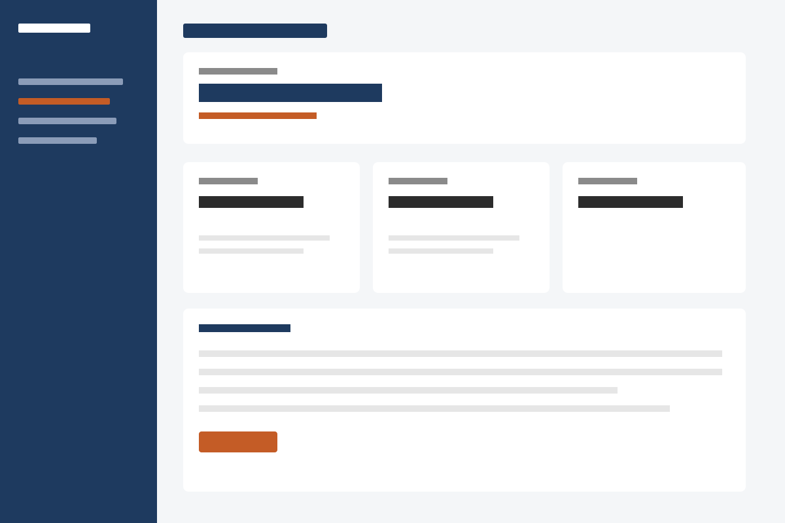
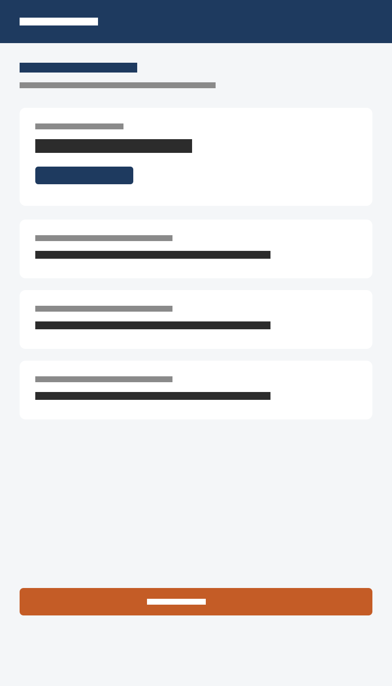

Northshore Bank
Northshore asked me to help rethink the everyday banking experience for their retail customers. I joined a small product trio — design, PM, and an engineering lead — and spent the first stretch of the engagement in workshops, stakeholder interviews, and a review of the existing app and online banking. There was a lot of history in the product. Features had accumulated over several years, and the team was ready for a more coherent way of organizing accounts, activity, and the tasks people actually come to do.
I worked across the account home, transfers, and the first version of a shared activity view. A lot of the job was making space for a clearer hierarchy without throwing away flows operations still depended on. I partnered with research on a round of interviews and then moved into design in Figma, with regular critiques and a handoff into the existing component library.
Process
- Kickoff and stakeholder workshops
- Competitive review
- Customer interviews (with research)
- Flows and wireframes in Figma
- UI in the existing design system
- Prototype in Maze
- Handoff and implementation support


Outcome
The new experience increased engagement and was well received internally. Customers found it easier to get through common tasks, and the team now has a structure they can keep building on. I stayed on through the first release to support QA and a few late copy changes.